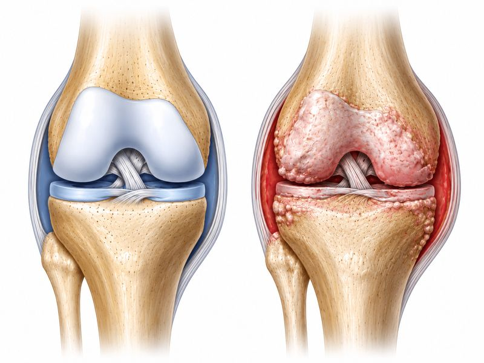
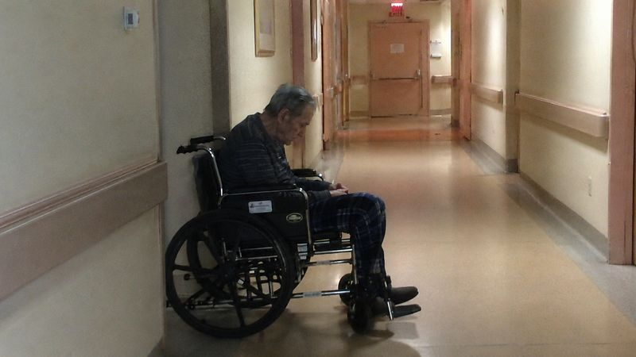
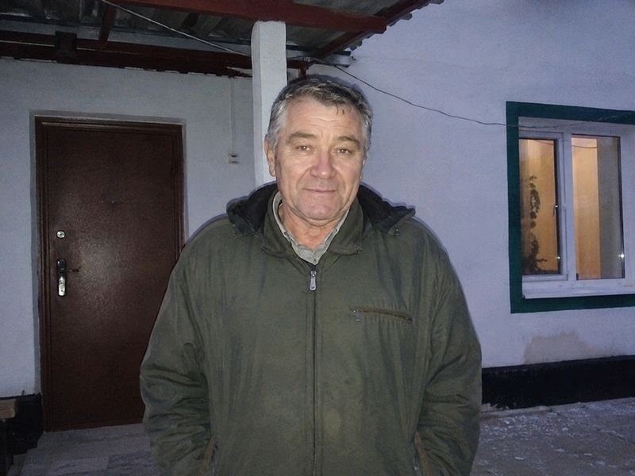
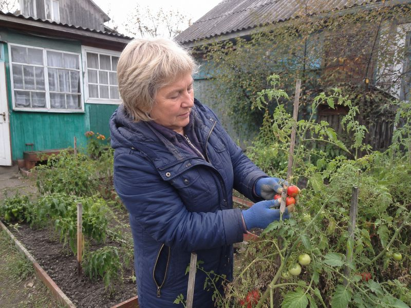
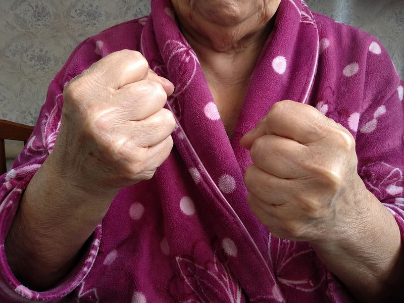
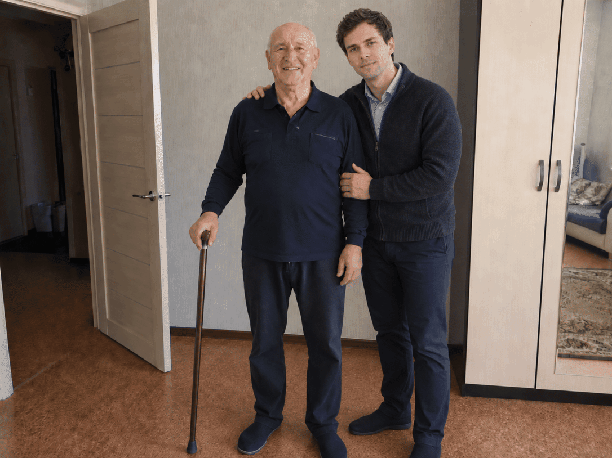
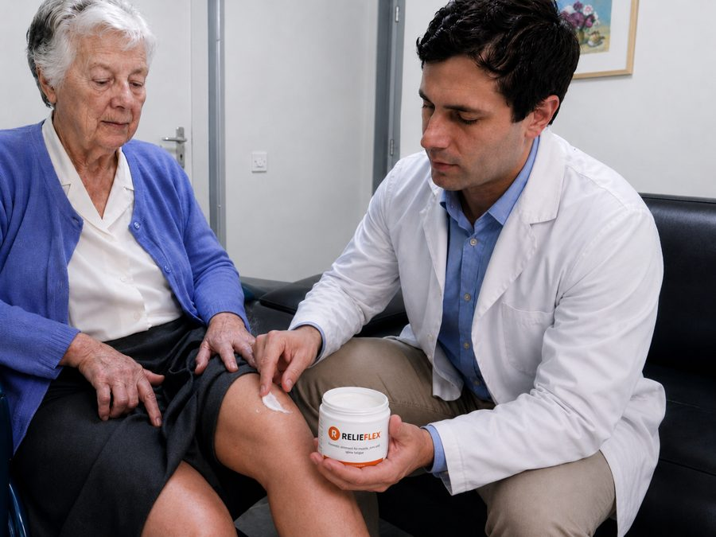
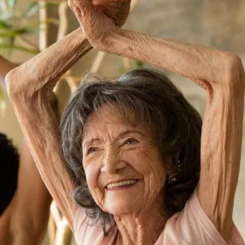

●14:20 Nowe zalecenia dla seniorów w sprawie stawów
Zdrowie i profilaktyka
«KIEDY NIE MOŻESZ JUŻ CHODZIĆ, RODZINA O TOBIE ZAPOMINA.»MŁODY LEKARZ, KTÓRY JEŹDZI PO DOMACH OPIEKI I PRZYWRACA PORZUCONYM
SENIOROM TO, CZEGO NIKT INNY NIE MOŻE: STAWY I GODNOŚĆ. JEGO METODA
ZSZOKOWAŁA CAŁE ŚRODOWISKO MEDYCZNE.
Opublikowano:
Jak zaledwie 30-letni lekarz, dr Marek Kowalski, zrezygnował z kariery w
prywatnej klinice w Warszawie, by pomagać zapomnianym emerytom w domach
opieki, seniorom porzuconym przez rodziny właśnie dlatego, że nie mogli
już chodzić, nie mogli stać, nie mogli nic zrobić sami. I jak metoda,
którą opracował wspólnie z centrum badawczym, przywróciła im sprawność
ruchową, bez operacji i bez tabletek na całe życie.
Anna Wiśniewska
Redaktor ds. zdrowia
· Aktualizacja: 2 godziny temu
18 6421 204
Treść zweryfikowana Aktualizacja: 2 godziny temu Czas czytania: 4 min
Przyjechaliśmy do Radomia we wtorkowy poranek. Droga do domu opieki
prowadziła wąską ulicą, wśród domów ze starymi furtkami i szczekającymi
psami. «Szukacie młodego doktora?», zapytała kobieta z miejscowego
baru. «Przyjeżdża co czwartek. Seniorzy czekają na niego przy bramie.
Niektórzy płaczą, kiedy go widzą.»
W ten sposób po raz pierwszy usłyszeliśmy o dr. Marku Kowalskim, 30-letnim lekarzu, który porzucił posadę w prywatnej klinice w
Warszawie, aby robić to, czego żaden inny lekarz nie chciał: jeździć po
domach opieki w całej Polsce i leczyć emerytów, których rodziny
porzuciły.
Powód porzucenia? Prawie zawsze ten sam:
seniorzy nie mogli już chodzić. Kolana odmówiły posłuszeństwa.
Plecy się skrzywiły. Ręce trzęsły się tak bardzo, że nie mogli utrzymać
łyżki. I w tym momencie, dokładnie wtedy, kiedy najbardziej
potrzebowali pomocy, rodziny uznały, że to za dużo. Za trudno. Za
drogo. I zabrały ich do domu opieki.
«Mój syn powiedział: „Mamo, nie daję rady podnosić cię z krzesła za
każdym razem. Nie dam rady.” Następnego dnia zawiózł mnie do domu
opieki. Nie odwiedził mnie od 3 lat.»
Pani Elżbieta, 79 lat, dom opieki w Radomiu
«Kiedy moje kolana całkowicie się zablokowały, żona powiedziała, że nie
może żyć z inwalidą. Odeszła. Dzieci stanęły po jej stronie. Przywieźli mnie
tutaj i zniknęli.»
Pan Paweł, 73 lata, dom opieki w woj. podlaskim
«Zobaczyłem, jak wygląda porzucenie. I postanowiłem, że nie mogę
bezczynnie patrzeć»
Wywiad ekskluzywny z dr. Markiem Kowalskim, lekarzem, który
zrezygnował z pensji 8 500 zł miesięcznie, by pomagać tym, którzy nie
mają już nikogo
Dr Marek Kowalski: «Pierwszy raz wszedłem do domu opieki jako wolontariusz, miałem 26 lat. I nie byłem przygotowany na to, co
zobaczyłem. 76-letnia kobieta, pani Róża, siedziała na skraju łóżka z
opuchniętymi nogami i kolanami, które się już nie zginały. Od 4
miesięcy nie wychodziła z pokoju. Złapała mnie za rękę i powiedziała:
«Panie doktorze, córka przywiozła mnie tutaj, kiedy nie mogłam już
schodzić po schodach. Powiedziała, że nie może się mną dłużej
zajmować. To było dwa lata temu. Od tego czasu nie przyjechała.»
W TYM MOMENCIE ZROZUMIAŁEM, ŻE TO SĄ LUDZIE, KTÓRZY NAJBARDZIEJ
MNIE POTRZEBUJĄ, CI, O KTÓRYCH CAŁY ŚWIAT ZAPOMNIAŁ WŁAŚNIE DLATEGO, ŻE NIE MOGĄ
JUŻ CHODZIĆ.»
Dr Kowalski opowiada spokojnie, ale z intensywnością, której nie można
zignorować. Od czterech lat jeździ po domach opieki w całej Polsce, od
Warszawy po Kraków, od Gdańska po Wrocław. I wszędzie znajduje ten sam
druzgocący obraz: seniorów ze zniszczonymi stawami, którzy nie otrzymują
żadnego prawdziwego leczenia, tylko tabletki przeciwzapalne, które niszczą
im żołądek i nerki.
«Większość tych ludzi trafiła tutaj z powodu stawów. Kolana odmówiły
posłuszeństwa. Plecy się zablokowały. Biodro się zużyło. I w momencie,
kiedy nie mogli już chodzić samodzielnie, rodziny uznały, że są
ciężarem. To jest słowo, które słyszę najczęściej w domach opieki:
„ciężar". Opisują własnych rodziców jako ciężar.»
«Nie przywieźli mnie tutaj, bo mnie nie kochali. Przywieźli mnie tutaj,
bo budziłem się o 3 w nocy, krzycząc z bólu kolana i nikt nie mógł spać.
Synowa powiedziała, że albo ja się wyprowadzam, albo ona. Syn wybrał
ją.»
Pan Jan, 71 lat, dom opieki w woj. śląskim
«Tabletki na stawy niczego nie rozwiązują, tylko maskują zniszczenie»
Dr Kowalski wyjaśnia, dlaczego konwencjonalne terapie w domach opieki
i aptekach zawodzą
Dr Marek Kowalski:
Mówię szczerze: to, co widziałem w tych domach opieki, mną
wstrząsnęło. Osobom od 55 do 80 lat podaje się od lat te same leki
przeciwzapalne, tabletki, które maskują ból na kilka godzin, nie lecząc
przyczyny. Ich chrząstka nadal się niszczy. Płyn stawowy zanika. Stawy
ścierają się kość o kość. A chemia tabletek niszczy im żołądek, wątrobę
i nerki każdego dnia.
To błędne koło: ból → tabletki → ból wraca silniejszy → silniejsze
tabletki → żołądek wysiada → dochodzą tabletki na żołądek → nerki wysiadają. I nikt nie mówi im prawdy:
że istnieje sposób na regenerację stawu od wewnątrz, a nie tylko na uśmierzenie bólu.
Kolana pani Marii, 74 lata, dom opieki w woj. małopolskim. Artroza 3.
stopnia, chrząstka prawie całkowicie zniszczona. Od 5 miesięcy nie
wychodzi z pokoju. Na szafce nocnej, 6 rodzajów tabletek, które
niczego nie zmieniły.
Ból kolana, pleców lub biodra po 45. roku życia to nie „normalność
dla tego wieku", to sygnał, że chrząstka stawowa ulega zniszczeniu,
a płyn stawowy zanika.
Tabletki przeciwzapalne blokują jedynie sygnał bólowy, podczas gdy
zniszczenie postępuje w ciszy. Bez prawdziwej regeneracji chrząstki
staw zużywa się całkowicie, a wtedy jedyną opcją pozostaje wózek
inwalidzki lub wszczepienie endoprotezy.
Dr Marek Kowalski:
Proszę, zrozumcie powagę sytuacji. U większości tych seniorów
chrząstka kolana, kręgosłupa lub biodra jest zniszczona w 70-90%. Chodzą, jeśli jeszcze chodzą, kość o kość. Każdy krok to męczarnia.
KONWENCJONALNE TABLETKI NIE MOGĄ ODBUDOWAĆ CHRZĄSTKI, MASKUJĄ
JEDYNIE BÓL, AŻ WSZYSTKO SIĘ ZAŁAMIE!
A to, co rozdziera mi duszę: ci ludzie nie mają nikogo. Rodzina
porzuciła ich dokładnie w momencie, kiedy stawy odmówiły posłuszeństwa.
Są sami, w łóżku, w małym pokoju i czekają. Niektórzy nie wiedzą już, na
co czekają.
«Wychowałam troje dzieci. Przez 40 lat pracowałam na roli. A kiedy moje
kolana odmówiły posłuszeństwa i nie mogłam sama iść do łazienki, zabrali mnie do domu
opieki. Jakbym dla nich już nie istniała. Jakbym już umarła.»
Pani Jadwiga, 82 lata, dom opieki w woj. lubelskim
«Przez 35 lat byłem brygadzistą w fabryce. Plecy odmówiły posłuszeństwa w wieku 62
lat. Przepuklina dysku, rwa kulszowa, nie mogłem stać. Syn powiedział,
że nie może siedzieć w domu i się mną opiekować. Ma swoją pracę, swoją
rodzinę. Rozumiem. Ale boli bardziej niż plecy.»
Pan Józef, 68 lat, dom opieki w woj. łódzkim

Po lewej: zdrowy staw z nienaruszoną chrząstką i wystarczającą
ilością płynu stawowego. Po prawej: zniszczony staw, chrząstka
zużyta, przewlekły stan zapalny, kość ociera się o kość. To
rzeczywistość ponad 80% seniorów w domach opieki. Tabletki
przeciwzapalne nie odbudowują chrząstki.
Ważne: w 2/3 przypadków, nawet przy codziennym przyjmowaniu tabletek
przeciwbólowych, stawy nadal się pogarszają, ponieważ prawdziwa przyczyna, zniszczenie chrząstki i zanik płynu stawowego, pozostaje nierozwiązana.
Po latach stosowania leków przeciwzapalnych wielu pacjentów traci nie
tylko sprawność ruchową, ale też niszczy sobie żołądek, wątrobę i nerki. Wrzody,
niewydolność wątroby, uszkodzenie nerek: oto cena, jaką płacą ci, którym nikt
nigdy nie zaproponował prawdziwej alternatywy.
Źródło Polskie Towarzystwo Ortopedyczne i Traumatologiczne, raport 2025: długotrwałe stosowanie NLPZ u seniorów zwiększa ryzyko powikłań żołądkowo-jelitowych o 60%.
Historie, które zmieniły moje życie, i które zmienią sposób, w jaki
patrzysz na starość
Dr Marek Kowalski:
Pozwólcie, że opowiem wam, co widzę co tydzień. Nie liczby. Nie
statystyki. Ludzi. Ludzi z imionami, z historiami, z dziećmi, które już
nie przyjeżdżają.
Pani Halina, 77 lat. Reumatoidalne zapalenie stawów obu dłoni, nie
jest w stanie trzymać filiżanki ani samodzielnie się ubrać. Córka
zawiozła ją do domu opieki 2 lata temu: «Nie mogę ubierać cię każdego
ranka, mam też swoje życie.»
«Nie jestem w stanie nawet się uczesać. Ani nalać sobie wody. Ręce mnie nie słuchają. Rano patrzę na nie i nie poznaję, opuchnięte, skrzywione,
jakby nie moje. Synowa powiedziała mi kiedyś: „Jak mam ci zostawić wnuki,
skoro nie jesteś w stanie utrzymać łyżki?” Miała rację. Ale te słowa
zraniły mnie do żywego.»
Pani Halina, 77 lat

Pan Ryszard, 75 lat. Przepuklina dysku L4-L5, obustronna koksartroza.
Od 8 miesięcy nie wstaje z łóżka. «Powiedzieli, że jestem za stary na
operację. Powiedzieli, żebym się z tym pogodził.»
«Byłem traktorzystą. Zaorałem tysiące hektarów. Teraz nie jestem w
stanie sam odwrócić się w łóżku. Plecy się zablokowały, biodro się
zrosło. Moje dzieci pracują w Niemczech. Wysyłają pieniądze na dom
opieki i tyle. Nie potępiam ich. Ale w nocy, kiedy boli i nikt nie
przychodzi… zastanawiam się, czy tak wygląda koniec.»
Pan Ryszard, 75 lat
Oto objawy, które spotykam najczęściej w domach opieki, a które
miliony Polaków ignorują:
Silny ból kolana przy wchodzeniu/schodzeniu po schodach, lub przy
każdym ruchu;
Sztywność poranna, ciało „drewniane", niezdolne do ruchu przez 30-60
minut po przebudzeniu;
Przewlekły ból pleców, nie mogą się schylić, nie mogą wstać z łóżka;
Obrzęk kolan, kostek lub palców;
Trzeszczenie i strzykanie w stawach przy każdym ruchu;
Ból biodra promieniujący do uda, nie są w stanie przejść więcej niż
50 metrów;
Zdeformowane, guzowate palce dłoni, nie mogą chwycić przedmiotów;
Drętwienie nóg lub rąk, objaw przepukliny lub uciśniętego nerwu;
Uczucie „dźgnięcia nożem" w odcinku lędźwiowym przy wstawaniu;
Nocny ból, który nie pozwala spać, budzą się 4-5 razy w nocy;
Każdy z tych objawów to sygnał alarmowy. A po 45-50. roku życia ich
ignorowanie prowadzi do jednego wyniku:
CAŁKOWITA UTRATA RUCHOMOŚCI, WÓZEK INWALIDZKI, PEŁNA ZALEŻNOŚĆ OD
INNYCH, A W WIELU PRZYPADKACH DOM OPIEKI.
Każdy dzień spędzony z nieleczonymi stawami przybliża do trwałej
utraty sprawności ruchowej! Tysiące emerytów w domach opieki trafiło
tam właśnie dlatego, że zignorowali ból, albo brali tylko tabletki,
które nie leczyły przyczyny. Działajcie teraz, dla siebie lub dla
swoich bliskich, zanim będzie za późno!
«Postanowiłem, że musi istnieć sposób na regenerację stawów, nie tylko
na uśmierzenie bólu»
Jak 30-letni lekarz przekonał centrum badawcze do opracowania czegoś,
czego przemysł farmaceutyczny nie chce zrobić
Dr Marek Kowalski:
Po roku wizyt w domach opieki uświadomiłem sobie bolesną prawdę:
tabletkami przeciwzapalnymi nikogo nie jestem w stanie uratować. Te leki
gaszą jedynie sygnał alarmowy organizmu, podczas gdy staw nadal się
niszczy. Potrzebowałem czegoś zupełnie innego: metody, która regeneruje
chrząstkę od wewnątrz, przywraca płyn stawowy i zatrzymuje stan zapalny
na poziomie komórkowym.
Skontaktowałem się z centrum badawczym, z którym współpracowałem podczas
studiów. Przedstawiłem im przypadki, zdjęcia, wyniki badań moich
pacjentów z domów opieki. Zabrałem badaczy ze sobą do domów opieki, żeby na własne oczy zobaczyli, co się dzieje. Byli w szoku.
Pracowaliśmy wspólnie ponad 10 miesięcy. Przetestowaliśmy ponad 180
kombinacji. I w końcu znaleźliśmy dokładną formułę, maść, która po
nałożeniu na dotknięty staw przenika na poziom komórkowy i aktywuje
naturalną regenerację chrząstki. Nie tabletka, która przechodzi przez
żołądek i niszczy wątrobę. Maść, która działa dokładnie tam, gdzie
trzeba.
Co znajduje się w tej ukierunkowanej formule?
Kasztanowiec
Pomaga zmniejszyć obrzęk i uczucie ciężkości.
Ekstrakt z lawendy
Kojąco łagodzi podrażnienia i swędzenie skóry.
Mentol
Chłodzący komfort przy bólu i napięciu.
Limonen i naturalne olejki eteryczne
Uczucie świeżości i ulgi zaraz po wmasowaniu.
Dodatkowe składniki naturalne
Wspierają komfort stawów i kości.
Lekka konsystencja szybko się wchłania i pozwala nałożyć składniki roślinne dokładnie w bolącym miejscu.
Te składniki są trudne do uzyskania w wymaganym stężeniu. Ich połączenie
w odpowiednich proporcjach wymaga specjalnej technologii, jeśli
proporcje są błędne nawet o 0,1%, maść nie przenika wystarczająco
głęboko i nie aktywuje regeneracji chrząstki.
Czy ten artykuł był pomocny?
Tak · 3 418Nie · 112
Tak powstał RelieFlex, maść, w której kluczowe składniki połączono w starannie dobranych
proporcjach
Dr Marek Kowalski:
Wspólnie z centrum badawczym udało nam się wyprodukować ten produkt:
maść do stosowania zewnętrznego, którą nakłada się bezpośrednio na
dotknięty staw, kolano, plecy, biodro, dłonie, szyję. Nazywa się
RelieFlex. Stosuje się ją trzy razy dziennie: niewielką ilość nakłada się na bolący staw i wmasowuje aż do całkowitego wchłonięcia. Substancje czynne wnikają bezpośrednio do
stawu, omijając żołądek i wątrobę, co eliminuje wszystkie skutki
uboczne tabletek.
Sekret tkwi w «Technologii Głębokiej Penetracji Transdermalnej», którą
opracowaliśmy z zespołem laboratoryjnym. Ta metoda pozwala substancjom
czynnym dotrzeć bezpośrednio do torebki stawowej, tam, gdzie chrząstka
ulega zniszczeniu, z 5-krotnie wyższą skutecznością niż jakikolwiek
powszechnie dostępny produkt na rynku.
«RelieFlex» nie ma konkurencji. Każdy składnik, w dokładnym stężeniu, aktywuje
regenerację chrząstki, przywrócenie płynu stawowego i zatrzymanie stanu
zapalnego. To jedyna maść, która działa na poziomie komórkowym,
bezpośrednio na dotkniętą strefę, kolano, plecy, biodro, dłonie, szyję, nie przechodząc przez żołądek. A co najważniejsze: działa nawet w
wieku 70, 80, 85 lat. Po raz pierwszy przetestowałem ją na moich
pacjentach w domach opieki, na ludziach, których nikt inny już nie
leczył.
Dr Marek Kowalski:
Pierwszymi pacjentami byli porzuceni seniorzy z domów opieki. Ludzie,
których rodziny porzuciły. Posmarowałem maścią opuchnięte kolana, plecy,
biodra. I czekałem. Trzeciego dnia pani Jadwiga, która od 4 miesięcy
nie wstawała z łóżka, zrobiła pierwsze kroki sama. Oboje płakaliśmy.
Czego można oczekiwać przy regularnym stosowaniu
RelieFlex?
Najpierw pojawia się przyjemne uczucie chłodzenia. Regularne wmasowywanie, trzy razy dziennie, pomaga łagodzić codzienny ból i napięcie. Z każdym dniem
RelieFlex staje się prostym, codziennym rytuałem ulgi.
Eliminacja bólu i stanu zapalnego:
Już w kilka minut po aplikacji mentol i naturalne olejki eteryczne
przynoszą uczucie chłodzenia i ulgi. Nie poprzez blokowanie
sygnału nerwowego (jak robią tabletki), ale działając miejscowo,
dokładnie tam, gdzie boli.
Mniej obrzęku i uczucia ciężkości:
Ekstrakt z kasztanowca pomaga zmniejszyć obrzęk wokół
stawu i uczucie ciężkości. Pierwszą różnicę wiele osób zauważa
po kilku dniach regularnego stosowania.
Swobodniejszy ruch:
Gdy ból i obrzęk słabną, łatwiej zgiąć kolano, wstać z
krzesła i zejść po schodach. Ruch staje się płynniejszy.
Długoterminowa ochrona i profilaktyka:
Lawenda i składniki roślinne łagodzą podrażnioną skórę, a
stosowanie przez całą kurację, trzy razy dziennie, pomaga
utrzymać komfort stawów na dłużej.
«Najpierw przetestowałem
RelieFlex na moich pacjentach z domów opieki. Wyniki przerosły wszystko, co widziałem przez
6 lat praktyki medycznej»
Następnie przeprowadzono badanie obejmujące 2340 osób w wieku od 45
do 86 lat.
Dr Marek Kowalski:
Pierwszymi pacjentami byli porzuceni seniorzy z domów opieki. Ci,
których nikt już nie leczył. Wyniki były tak imponujące, że centrum
badawcze rozszerzyło testy na grupę ponad 2300 osób z całej Polski, uwzględniając wszystkie rodzaje problemów stawowych: kolana, plecy,
biodra, dłonie, szyja.
Widziałem 80-letnich ludzi, którzy nie mogli chodzić, a po 6 tygodniach
samodzielnie wychodzili na podwórko domu opieki. Pielęgniarki płakały.
Ja płakałem razem z nimi.
Wyniki badań «RelieFlex», grupa badana: 2340 osób w wieku 45-86 lat
Całkowita eliminacja bólu kolana
96,2%
Eliminacja bólu pleców i sztywności porannej
94,7%
Artroza 1-2 stopnia (pełne przywrócenie ruchomości)
98,1%
Artroza 3 stopnia (znaczna poprawa)
87,3%
Koksartroza (ból biodra)
91,5%
Przepuklina dysku (redukcja bólu i drętwienia)
89,4%
Reumatoidalne zapalenie stawów (palce dłoni)
93,8%
Pełne przywrócenie ruchomości stawu
95,6%
Eliminacja obrzęku i nocnych skurczów
97,0%
Zdolność samodzielnego chodzenia
94,3%
Przypadki, które złamały mi serce, i dały największą nadzieję
Pani Wiktoria, 84 lata, trafiła do domu opieki, gdy jej kolana
odmówiły posłuszeństwa. Po 2 miesiącach stosowania
RelieFlex po raz
pierwszy od 3 lat samodzielnie wyszła do ogrodu.
Pani Wiktoria Nowakowska była jedną z pierwszych pacjentek dr. Kowalskiego w domu
opieki w woj. podkarpackim. W wieku 84 lat, z artrozą 3. stopnia w obu
kolanach i koksartrozą lewego biodra, nie mogła chodzić od 3 lat.
Syn zawiózł ją do domu opieki, kiedy „nie był w stanie zanieść jej do
łazienki". Nie odwiedził jej od dwóch lat.
«Nie wierzyłam, że kiedykolwiek jeszcze będę mogła chodzić. Moje
kolana były tak opuchnięte, że nie mogłam ich zgiąć. Pielęgniarki woziły mnie po pokoju na wózku inwalidzkim. Rano budziłam się i przez godzinę nie
mogłam poruszyć nawet palcem. Jakby moje ciało umarło, a ja wciąż żyłam.
Syn zawiózł mnie do domu opieki, bo nie był w stanie podnieść mnie z
łóżka. Powiedział: „Mamo, będę cię odwiedzał w każdą niedzielę.” Nie
przyjechał od dwóch lat. Nie potępiam go, ma swoje życie. Ale w
nocy, kiedy ból mnie budzi i nikogo przy mnie nie ma… jest ciężko.
A potem przyjechał dr Kowalski. Był pierwszą osobą, która dotknęła
moich kolan bez obrzydzenia na twarzy. Wytłumaczył mi, co dzieje się
ze stawami. I nałożył maść. Po tygodniu mogłam zgiąć lewe kolano. Po
miesiącu wstałam z łóżka sama. Po dwóch miesiącach wyszłam do
ogrodu. Nie wychodziłam od 3 lat.
Pielęgniarka płakała, kiedy mnie zobaczyła. Ja płakałam bardziej. Nie
dlatego, że chodziłam. Ale dlatego, że ktoś, młody doktor, którego
nigdy wcześniej nie znałam, dał mi więcej niż mój własny syn.
Wiktoria Nowakowska, 84 lata, dom opieki w woj. podkarpackim
Kolejny przypadek: pan Antoni, 58 lat, murarz przez całe życie, ze
zniszczonymi plecami z powodu przepukliny dysku. Żona odeszła, kiedy nie
mógł już pracować.

«Przez 30 lat byłem murarzem. Plecy odmówiły posłuszeństwa w wieku 54
lat, dwie przepukliny dysku i rwa kulszowa. Nie mogłem ani stać, ani
leżeć. Wszystko bolało. Żona odeszła, powiedziała, że nie może
opiekować się inwalidą. Nie potępiam jej.
Moja siostra usłyszała o dr. Kowalskim od sąsiadki. Przysłała mi
maść
RelieFlex. Zacząłem smarować nią plecy trzy razy dziennie. Trzeciego dnia
poczułem pierwszą ulgę. Po 3 tygodniach mogłem znów iść do sklepu.
Po 2 miesiącach wróciłem do pracy na pół etatu.
Czasem budzę się rano, wstaję z łóżka bez bólu i zatrzymuję się na
sekundę. Stoję i nie mogę uwierzyć, że to prawda. Że już nie boli.
Gdyby nie dr Kowalski, może ja też byłbym teraz w domu opieki.»
«RelieFlex działa nie
tylko powierzchniowo, jego formuła wspiera staw podczas codziennego
stosowania»
Z rozwiązania mogą korzystać nie tylko mieszkańcy domów opieki. To
również propozycja dla osób po 45. roku życia, które zaczynają
odczuwać pierwsze sygnały dyskomfortu.
Dr Marek Kowalski:
Minimalny czas stosowania to 30 dni, ale w ciężkich przypadkach
artrozy lub przepuklin mogą być potrzebne 2-3 miesiące. Jednak w każdym
przypadku, bez wyjątku, obserwuje się zmniejszenie bólu, regenerację
chrząstki i przywrócenie ruchomości.
RelieFlex
działa od pierwszej aplikacji: ból maleje, stan zapalny się zmniejsza,
ruch staje się łatwiejszy. Ale prawdziwa magia dzieje się z czasem:
chrząstka się regeneruje, płyn stawowy wraca, staw „odmładza się" od
wewnątrz.
Widziałem 80-letnich ludzi chodzących ponownie. Widziałem dłonie,
które nie mogły trzymać filiżanki, podnoszące łyżkę do ust. Widziałem
skrzywione plecy prostujące się. I w każdym przypadku widziałem łzy
radości.
Dzięki metodzie dr. Kowalskiego ponad 20 000 osób w Polsce odzyskało
sprawność stawów. Oto niektóre przypadki:
Mężczyzna, 65 lat. Artroza 3. stopnia w obu kolanach, nie mógł
wchodzić po schodach.
RelieFlex
w 60 dni: pełna sprawność ruchowa, bez bólu.

Kobieta, 58 lat. Przewlekły ból pleców i przepuklina L5-S1.
RelieFlex
w 45 dni: ból wyeliminowany, znów może wykonywać prace domowe.

Kobieta, 72 lata. Ciężkie reumatoidalne zapalenie stawów palców, nie
mogła trzymać filiżanki.
RelieFlex w 2
miesiące: palce ruchome, obrzęk zniknął.

Mężczyzna, 70 lat. Zaawansowana koksartroza, chodził tylko z
chodzikiem.
RelieFlex
w 2,5 miesiąca: chodzi sam, bez bólu.
Dr Marek Kowalski:
Te przypadki to żywy dowód, że stawy mogą się regenerować, nawet gdy
diagnoza brzmiała jak wyrok. Bez operacji. Bez tabletek niszczących
żołądek. A to, co daje mi największą radość: wielu z tych ludzi to
mieszkańcy domów opieki, ci, o których świat zapomniał.
Ale ja o nich nie zapomniałem. I
RelieFlex
też o nich nie zapomina.
Wciąż masz pytania?
Czy mogę używać maści
RelieFlex, jeśli
przyjmuję leki na receptę?
RelieFlex jest
produktem do stosowania miejscowego, przeznaczonym wyłącznie do
użytku zewnętrznego. Chociaż produkty miejscowe zasadniczo różnią
się od leków doustnych, nie możemy ocenić, czy produkt jest
odpowiedni w konkretnej sytuacji medycznej lub przy danym schemacie
leczenia. Jeśli przyjmujesz leki na receptę, masz chorobę
współistniejącą albo jakiekolwiek wątpliwości dotyczące nowego
produktu do stosowania miejscowego, przed użyciem skonsultuj się z
farmaceutą lub lekarzem.
Czy maść ma apteczny zapach i czy może pozostawiać plamy na pościeli
lub ubraniach?
RelieFlex ma lekki
aromat wynikający z obecności składników roślinnych i nie został
opracowany tak, aby mieć intensywny apteczny zapach
charakterystyczny dla niektórych preparatów miejscowych. Przed
ubraniem się lub kontaktem z tkaniną odczekaj, aż maść całkowicie się wchłonie. Produkt nie powinien brudzić odzieży ani pościeli przy
stosowaniu zgodnym z instrukcją, jednak w razie wątpliwości najpierw
wykonaj próbę na małym, niewidocznym fragmencie tkaniny.
Jak szybko coś poczuję i jak długo będzie trwało to odczucie?
W przeciwieństwie do poduszek grzewczych lub opasek uciskowych,
RelieFlex jest maścią do stosowania miejscowego, którą można nakładać bezpośrednio na
wybrane obszary i delikatnie wmasować. Nie zależy od ciepła ani
ucisku i można go stosować wtedy, gdy jest potrzebny. Niektóre osoby
używają
RelieFlex
samodzielnie, a inne włączają ją do swojej codziennej pielęgnacji.
Jak wygląda zamówienie i dostawa?
Wystarczy podać imię i numer telefonu w formularzu na oficjalnej
stronie. Konsultant oddzwoni w ciągu kilku minut, potwierdzi
zamówienie i poda koszt dostawy. Przesyłka dociera do każdego miasta
w Polsce w około 2 dni.
Dlaczego RelieFlex nie
jest dostępny w aptekach i jak można go zamówić?
Dr Marek Kowalski:
Niestety, produkcja
RelieFlex
to skomplikowany i kosztowny proces. Naturalne składniki,
ekstrakt z kasztanowca, lawenda i olejki eteryczne, muszą mieć
odpowiednią jakość i trudno je pozyskać w wymaganych
ilościach. Nie jesteśmy w stanie zaspokoić całego popytu.
Potrzebne będą co najmniej 2-3 lata, zanim
RelieFlex
trafi do aptek. Do tego czasu produkt jest dystrybuowany wyłącznie
online, w ramach programów wsparcia, dwa razy w roku. Ale
rabaty mogą sięgać nawet 50%, co jest kluczowe dla emerytów.
Proszę: NIE PRZEGAPCIE PROGRAMU WSPARCIA. Nie tylko dla siebie, ale też
dla rodziców, dziadków, bliskich, którzy może cierpią w milczeniu. Lub
dla kogoś, kto jest już w domu opieki, sam, i nikt mu niczego nie
wysyła. Bądźcie tymi, którzy coś zmieniają.
Aby złożyć zamówienie, skorzystaj z przycisku prowadzącego do
formularza na oficjalnej stronie.
Ograniczona czasowo oferta wkrótce się kończy
Informacje o
RelieFlex rozchodzą
się bardzo szybko. Tylko w ubiegłym miesiącu ponad 20 000 osób
zdecydowało się włączyć tę maść do swojej codziennej pielęgnacji stawów.
Podczas obecnej krótkiej promocji cena jest obniżona o 50%, z 194 zł do 97 zł, dlatego
dostępne partie znikają znacznie szybciej niż zwykle. Po wyczerpaniu
zapasu kończy się również specjalna cena.
Nie odkładaj kolejnego spaceru, rodzinnej kolacji ani zwykłego dnia
bez ciągłego napięcia. Kliknij przycisk poniżej, aby przejść do
oficjalnej strony
RelieFlex i sprawdzić
dostępność aktualnej partii.

Dr Marek Kowalski:
Dla czytelników tego portalu udostępniono ograniczoną partię
RelieFlex ze zniżką 50%.
Promocja obowiązuje do
lub do wcześniejszego wyczerpania zapasów.
Pomyśl o tym w ten sposób
Prywatna opieka związana z bólem pleców, stawów lub nerwobólami w
Polsce może szybko generować kolejne koszty:
jedna prywatna konsultacja ortopedyczna, neurologiczna lub
neurochirurgiczna, około 220-500 zł;
specjalistyczna blokada lub zabieg przeciwbólowy kręgosłupa, często
około 800-1500 zł;
miesięczne leki przeciwbólowe lub preparaty, których nie obejmuje
refundacja, około 100-300 zł;
jedna indywidualna sesja fizjoterapii, około 170-250 zł.
RelieFlex można
obecnie zamówić za 97 zł, mniej, niż kosztuje jedna prywatna wizyta, dzięki
ograniczonej czasowo zniżce 50%. Podane kwoty są orientacyjne i mogą różnić się zależnie od
miasta, placówki oraz zakresu świadczenia.
Bezpiecznie i przejrzyście
Zamówienie składasz, podając tylko imię i numer telefonu. Zanim
cokolwiek zostanie wysłane, konsultant oddzwoni, potwierdzi zamówienie
i poda cenę oraz koszt dostawy. Dzięki temu decyzja nie musi być
podejmowana w ciemno. Nie płacisz nic z góry. Płacisz kurierowi
dopiero przy odbiorze paczki.
Kliknij kontrastowy przycisk „Zamów ze zniżką 50%, płatność przy
odbiorze”.
Na oficjalnej stronie wpisz imię i numer telefonu w formularzu.
Konsultant oddzwoni w ciągu kilku minut i odpowie na pytania.
Potwierdź zamówienie podczas rozmowy z konsultantem.
Odbierz paczkę i zapłać przy odbiorze. Dostawa trwa około 2 dni.
Z nadzieją i szacunkiem, dr Marek Kowalski. Zadbajcie o swoich
bliskich. Być może jedyne, czego potrzebują, to wiedzieć, że o nich
nie zapomnieliście.
Dr Marek Kowalski
Autor · redakcja Zdrowie
Lekarz specjalizujący się w rehabilitacji stawów, od czterech lat pracuje jako wolontariusz w domach opieki w całej Polsce. Autor programu wsparcia seniorów z chorobami stawów.
Aktualizacja:
:
Ze względu na duże zainteresowanie aktualna partia może wyczerpać się
wcześniej niż planowano. Dziś, , promocja nadal jest aktywna, ale tylko do wyczerpania zapasów.
Do końca promocji pozostało:
00:15:00
Zostało tylko 27 promocyjnych opakowań
Cena regularna: 194 zł
Dziś: 97 zł(-50%) Płatność przy odbiorze
Seniorzy w domach opieki: jak odzyskać sprawność stawów po 70. roku życia
Zdrowie · 1 dzień temu
Lekarze ostrzegają: tabletki przeciwzapalne niszczą żołądek i nerki
Zdrowie · 2 dni temu
Naturalne składniki, które wspierają regenerację chrząstki stawowej
Styl życia · 3 dni temu
KOMENTARZE
Anna Wiśniewska
Płakałam, czytając ten artykuł. Moja mama ma 76 lat i jest w domu
opieki od 2 lat, właśnie dlatego, że kolana odmówiły i nie
byliśmy w stanie się nią opiekować. To moja największa wina.
Zamówiłam
RelieFlex
dla niej. Mam nadzieję, że nie jest za późno. Boże, mam
nadzieję, że zadziała.
Na wizytę w publicznej poradni czekałyśmy miesiącami, a
prywatna konsultacja kosztowała nas 350 zł.
Katarzyna Kamińska
RelieFlex
otrzymałam w zeszły piątek. Nakładam na kolana trzy razy dziennie. Po 5 dniach ból ogromnie się zmniejszył, jestem w
stanie schodzić po schodach bez trzymania się poręczy!
Historia doktora przekonała mnie do zamówienia. Niezwykły
człowiek.
W prywatnych placówkach terminy były szybsze, ale każda
kolejna konsultacja i rehabilitacja oznaczały setki
złotych.
Barbara Zielińska
Mam 69 lat. Plecy dręczyły mnie od 4 lat, przepuklina dysku i
rwa kulszowa. Nie mogłam się schylić, żeby zawiązać buty.
Lekarze dawali mi leki przeciwzapalne, które zniszczyły mi
żołądek. Po 3 tygodniach stosowania
RelieFlex, ból prawie całkowicie zniknął. Sama chodzę na targ, robię
zakupy, gotuję. Znowu żyję.
Część tabletek nie była refundowana, więc co miesiąc
zostawiałam w aptece około 180 zł.
Tomasz Lewandowski
Pracuję w biurze 10 godzin dziennie. Plecy i kark całkowicie odmówiły posłuszeństwa. Lekarz powiedział: «Albo pan rezygnuje z pracy, albo
operacja.» Wybrałem
RelieFlex. Po 5 tygodniach żadnego śladu bólu. I mój ogromny szacunek
dla dr. Kowalskiego, w świecie, gdzie wszyscy chcą pieniędzy,
on jeździ do zapomnianych starszych ludzi.
Krzysztof Wójcik
Zamówiłem 3 opakowania, dla siebie (kolana), dla żony (dłonie,
artretyzm) i dla teścia w domu opieki. Nie możemy go często
odwiedzać, ale przynajmniej wysyłamy to, czego potrzebuje. Mam
nadzieję, że jemu też pomoże. Dziękuję za artykuł.
Małgorzata Szymańska
Myślę o zamówieniu dla ojca. Jest w domu opieki od 3 lat, kolana odmówiły posłuszeństwa. Stracił chęć do życia, prawie się nie odzywa.
Myślicie, że
RelieFlex
może jeszcze pomóc w wieku 78 lat?
Ewa Jankowska
Małgorzato, moja mama ma 82 lata! Ciężka artroza obu kolan,
nie mogła wstać z łóżka. Stosowała
RelieFlex
przez 2 miesiące, teraz sama wychodzi na podwórko. Nie
przesadzam. A co najpiękniejsze: kiedy ją odwiedziłam, czekała na mnie, stojąc przy bramie. Obie płakałyśmy. Zamawiaj bez
wahania, twój ojciec zasługuje na szansę.
Stanisław Mazur
Małgorzato, zamawiaj, nie zastanawiaj się! Ja w wieku 78 lat
byłem o krok od wózka inwalidzkiego, koksartroza.
RelieFlex
w 2 miesiące postawił mnie na nogi. Dosłownie. Twój ojciec
potrzebuje tego bardziej, niż myślisz.
Dorota Krawczyk
Tydzień stosowania na kolana i lędźwie. Rano nie jestem już
„drewniana". Mogę się schylić, wstać bez jęku. Zamówiłam też dla
mojej 73-letniej sąsiadki, która mieszka sama i trzyma się
ścian, żeby chodzić po mieszkaniu.

Teresa Pawlak
W wieku 68 lat myślałam, że nigdy więcej nie będę mogła pracować
w ogrodzie. Kolana i plecy mnie sparaliżowały.
RelieFlex
zmienił wszystko, po 4 tygodniach przekopałam pierwszą grządkę
w tym roku. A historia dr. Kowalskiego głęboko mnie poruszyła.
Na świecie jeszcze są ludzie z sercem.
Henryk Dąbrowski
Mam 82 lata. W zeszłym roku nie mogłem sam iść do łazienki.
Dzieci mówiły o domu opieki. Spróbowałem
RelieFlex, bez większej nadziei. A działa! Chodzę sam, ubieram się sam,
sam wychodzę do furtki. Moje dzieci nie mówią już o domu opieki.
To moja największa radość w życiu.
Zbigniew Grabowski
Moja żona nie mogła zejść po schodach. Trzymała się ściany i
płakała z bólu. Myślałem, że ją stracę, nie z powodu choroby,
ale z rozpaczy. Zamówiłem
RelieFlex
z rabatem. Po 4 tygodniach wczoraj sama poszła na targ i
wróciła z kwiatami. Z kwiatami! Dziękuję z głębi serca.
Agnieszka Pawlak
Zamówiłam 4 opakowania, dla mamy (dom opieki, kolana), dla taty
(w domu, plecy) i 2 dla siebie (dłonie, artretyzm palców, nie
mogłam pisać). Historie z artykułu mną wstrząsnęły. Powinnam
była to zrobić dużo wcześniej. Nie mam już wymówek.
Jolanta Michalska
RelieFlex
dotarł, kurier dostarczył w 2 dni! Już nałożyłam na kolana mamy
w domu opieki. Mam wielką nadzieję. Wyślę ten artykuł też
personelowi, może skontaktują się z dr. Kowalskim.
Piotr Zawadzki
Szukałem
RelieFlex
w aptece, nie ma. Powiedzieli mi, żebym zamówił z tej strony.
Mam nadzieję, że jest jeszcze dostępny. Mój dziadek pilnie go
potrzebuje, ma 81 lat i w ogóle nie może chodzić.
🛡️ Certyfikowana jakość
🚚 Dostawa w około 2 dni
⚕️ Bez recepty
💵 Płatność przy odbiorze
POLITYKA PRYWATNOŚCI
Niniejsza Polityka Prywatności wyjaśnia, w jaki sposób serwis thelivingdispatch.com (dalej: „Serwis”, „my”) przetwarza informacje o osobach odwiedzających stronę. Szanujemy Twoją prywatność i dokładamy starań, aby chronić Twoje dane.
1. Jakie informacje zbieramy. Serwis nie zbiera automatycznie danych umożliwiających bezpośrednią identyfikację, takich jak imię, nazwisko, adres czy numer telefonu. Standardowo, w ramach działania serwerów internetowych, rejestrowane są dane techniczne: adres IP, typ przeglądarki, system operacyjny, adres strony odsyłającej oraz data i godzina odwiedzin.
2. Narzędzia analityczne. Strona korzysta z narzędzi analitycznych (Microsoft Clarity oraz narzędzia do pomiaru ruchu i konwersji), które zbierają zanonimizowane dane o sposobie korzystania ze strony, takie jak kliknięcia, przewijanie, czas spędzony na stronie, typ urządzenia i przeglądarki. Dane te służą wyłącznie do analizy i ulepszania strony oraz do rozliczania kampanii reklamowych.
3. Pliki cookies. Serwis może zapisywać na Twoim urządzeniu pliki cookies lub podobne technologie, jeśli jest to niezbędne do prawidłowego działania strony lub działania wymienionych wyżej narzędzi analitycznych. Możesz w dowolnym momencie zmienić ustawienia cookies w swojej przeglądarce lub usunąć zapisane pliki.
4. Linki do stron zewnętrznych. Serwis zawiera odnośniki do oficjalnej strony sprzedawcy produktu. Po przejściu na tę stronę obowiązują jej regulamin i polityka prywatności. Nie odpowiadamy za zasady przetwarzania danych stosowane przez serwisy zewnętrzne. Dane niezbędne do złożenia zamówienia podajesz wyłącznie na stronie sprzedawcy.
5. Twoje prawa. Zgodnie z Rozporządzeniem Parlamentu Europejskiego i Rady (UE) 2016/679 (RODO) przysługuje Ci prawo dostępu do danych, ich sprostowania, usunięcia, ograniczenia przetwarzania, przenoszenia oraz sprzeciwu wobec przetwarzania. Masz również prawo wniesienia skargi do Prezesa Urzędu Ochrony Danych Osobowych (UODO).
6. Dane dzieci. Serwis nie jest skierowany do osób poniżej 16. roku życia i nie zbiera świadomie ich danych.
7. Zmiany Polityki. Zastrzegamy sobie prawo do aktualizacji niniejszej Polityki Prywatności. Aktualna wersja jest zawsze dostępna na tej stronie. Dalsze korzystanie z Serwisu oznacza akceptację zmian.
Regulamin
Korzystając z serwisu thelivingdispatch.com (dalej: „Serwis”), akceptujesz poniższy Regulamin. Jeśli nie zgadzasz się z jego postanowieniami, prosimy o zaprzestanie korzystania z Serwisu.
1. Charakter Serwisu. Serwis publikuje treści o charakterze reklamowo-informacyjnym (advertorial). Artykuły mają na celu przedstawienie produktów i usług w formie redakcyjnej. Wyraźnie oznaczamy je jako materiał reklamowy.
2. Brak porady medycznej. Treści zamieszczone w Serwisie mają wyłącznie charakter informacyjny i nie stanowią porady lekarskiej, diagnozy ani zalecenia terapeutycznego. Nie zastępują konsultacji z lekarzem lub farmaceutą. Prezentowane produkty nie są produktami leczniczymi, nie służą do diagnozowania, leczenia ani zapobiegania chorobom.
3. Zakupy u sprzedawcy. Serwis nie prowadzi sprzedaży. Zamówienia składane są wyłącznie na oficjalnej stronie sprzedawcy, do której prowadzą odnośniki. Cena, dostępność, dostawa, prawo odstąpienia od umowy i reklamacje są regulowane regulaminem sprzedawcy, z którym należy się zapoznać przed złożeniem zamówienia.
4. Linki afiliacyjne. Serwis może otrzymywać prowizję od sprzedawcy za zakupy dokonane po przejściu z odnośników zamieszczonych na stronie. Nie wpływa to na cenę produktu, którą płaci kupujący.
5. Własność intelektualna. Wszelkie treści, grafiki i układ strony są chronione prawem autorskim. Kopiowanie, rozpowszechnianie lub wykorzystywanie ich bez zgody właściciela jest zabronione.
6. Ograniczenie odpowiedzialności. Dokładamy starań, aby informacje w Serwisie były rzetelne, jednak nie gwarantujemy ich kompletności ani aktualności. Nie ponosimy odpowiedzialności za decyzje podjęte na podstawie treści Serwisu ani za treści i działania stron zewnętrznych, do których prowadzą odnośniki. Indywidualne odczucia po stosowaniu produktów mogą się różnić.
7. Zmiany Regulaminu. Zastrzegamy sobie prawo do zmiany Regulaminu w dowolnym czasie. Aktualna wersja jest zawsze dostępna na tej stronie.
8. Prawo właściwe. Regulamin podlega prawu polskiemu. W sprawach nieuregulowanych zastosowanie mają przepisy powszechnie obowiązującego prawa.
Informacja o charakterze reklamowym
Materiał reklamowy. Niniejsza strona jest materiałem reklamowym (advertorial), przygotowanym w formie artykułu redakcyjnego. Ma na celu przedstawienie produktu i zachęcenie do zapoznania się z jego ofertą.
Produkt. Reklamowany produkt jest kosmetykiem do użytku zewnętrznego. Nie jest produktem leczniczym ani wyrobem medycznym i nie służy do diagnozowania, łagodzenia, zapobiegania ani leczenia chorób. Przed użyciem zapoznaj się z instrukcją i składem. W razie wątpliwości skonsultuj się z lekarzem lub farmaceutą.
Prowizja. Serwis może otrzymywać wynagrodzenie od sprzedawcy za zakupy dokonane po przejściu z odnośników na tej stronie.
Treść. Postacie, historie i wypowiedzi przedstawione w artykule mają charakter ilustracyjny i opierają się na fikcji literackiej. Wszelkie podobieństwo do rzeczywistych osób, miejsc i zdarzeń jest przypadkowe.
Wyłączenie odpowiedzialności. Informacje zamieszczone w Serwisie nie stanowią porady medycznej. Serwis nie gwarantuje żadnych rezultatów stosowania produktu. Szczegóły oferty, cena i warunki zakupu są określone wyłącznie przez sprzedawcę.


KOMENTARZE
Anna Wiśniewska
Płakałam, czytając ten artykuł. Moja mama ma 76 lat i jest w domu opieki od 2 lat, właśnie dlatego, że kolana odmówiły i nie byliśmy w stanie się nią opiekować. To moja największa wina. Zamówiłam RelieFlex dla niej. Mam nadzieję, że nie jest za późno. Boże, mam nadzieję, że zadziała. Na wizytę w publicznej poradni czekałyśmy miesiącami, a prywatna konsultacja kosztowała nas 350 zł.
Katarzyna Kamińska
RelieFlex otrzymałam w zeszły piątek. Nakładam na kolana trzy razy dziennie. Po 5 dniach ból ogromnie się zmniejszył, jestem w stanie schodzić po schodach bez trzymania się poręczy! Historia doktora przekonała mnie do zamówienia. Niezwykły człowiek. W prywatnych placówkach terminy były szybsze, ale każda kolejna konsultacja i rehabilitacja oznaczały setki złotych.
Barbara Zielińska
Mam 69 lat. Plecy dręczyły mnie od 4 lat, przepuklina dysku i rwa kulszowa. Nie mogłam się schylić, żeby zawiązać buty. Lekarze dawali mi leki przeciwzapalne, które zniszczyły mi żołądek. Po 3 tygodniach stosowania RelieFlex, ból prawie całkowicie zniknął. Sama chodzę na targ, robię zakupy, gotuję. Znowu żyję. Część tabletek nie była refundowana, więc co miesiąc zostawiałam w aptece około 180 zł.
Tomasz Lewandowski
Pracuję w biurze 10 godzin dziennie. Plecy i kark całkowicie odmówiły posłuszeństwa. Lekarz powiedział: «Albo pan rezygnuje z pracy, albo operacja.» Wybrałem RelieFlex. Po 5 tygodniach żadnego śladu bólu. I mój ogromny szacunek dla dr. Kowalskiego, w świecie, gdzie wszyscy chcą pieniędzy, on jeździ do zapomnianych starszych ludzi.
Krzysztof Wójcik
Zamówiłem 3 opakowania, dla siebie (kolana), dla żony (dłonie, artretyzm) i dla teścia w domu opieki. Nie możemy go często odwiedzać, ale przynajmniej wysyłamy to, czego potrzebuje. Mam nadzieję, że jemu też pomoże. Dziękuję za artykuł.
Małgorzata Szymańska
Myślę o zamówieniu dla ojca. Jest w domu opieki od 3 lat, kolana odmówiły posłuszeństwa. Stracił chęć do życia, prawie się nie odzywa. Myślicie, że RelieFlex może jeszcze pomóc w wieku 78 lat?
Ewa Jankowska
Małgorzato, moja mama ma 82 lata! Ciężka artroza obu kolan, nie mogła wstać z łóżka. Stosowała RelieFlex przez 2 miesiące, teraz sama wychodzi na podwórko. Nie przesadzam. A co najpiękniejsze: kiedy ją odwiedziłam, czekała na mnie, stojąc przy bramie. Obie płakałyśmy. Zamawiaj bez wahania, twój ojciec zasługuje na szansę.
Stanisław Mazur
Małgorzato, zamawiaj, nie zastanawiaj się! Ja w wieku 78 lat byłem o krok od wózka inwalidzkiego, koksartroza. RelieFlex w 2 miesiące postawił mnie na nogi. Dosłownie. Twój ojciec potrzebuje tego bardziej, niż myślisz.
Dorota Krawczyk
Tydzień stosowania na kolana i lędźwie. Rano nie jestem już „drewniana". Mogę się schylić, wstać bez jęku. Zamówiłam też dla mojej 73-letniej sąsiadki, która mieszka sama i trzyma się ścian, żeby chodzić po mieszkaniu.

Teresa Pawlak
W wieku 68 lat myślałam, że nigdy więcej nie będę mogła pracować w ogrodzie. Kolana i plecy mnie sparaliżowały. RelieFlex zmienił wszystko, po 4 tygodniach przekopałam pierwszą grządkę w tym roku. A historia dr. Kowalskiego głęboko mnie poruszyła. Na świecie jeszcze są ludzie z sercem.
Henryk Dąbrowski
Mam 82 lata. W zeszłym roku nie mogłem sam iść do łazienki. Dzieci mówiły o domu opieki. Spróbowałem RelieFlex, bez większej nadziei. A działa! Chodzę sam, ubieram się sam, sam wychodzę do furtki. Moje dzieci nie mówią już o domu opieki. To moja największa radość w życiu.
Zbigniew Grabowski
Moja żona nie mogła zejść po schodach. Trzymała się ściany i płakała z bólu. Myślałem, że ją stracę, nie z powodu choroby, ale z rozpaczy. Zamówiłem RelieFlex z rabatem. Po 4 tygodniach wczoraj sama poszła na targ i wróciła z kwiatami. Z kwiatami! Dziękuję z głębi serca.
Agnieszka Pawlak
Zamówiłam 4 opakowania, dla mamy (dom opieki, kolana), dla taty (w domu, plecy) i 2 dla siebie (dłonie, artretyzm palców, nie mogłam pisać). Historie z artykułu mną wstrząsnęły. Powinnam była to zrobić dużo wcześniej. Nie mam już wymówek.
Jolanta Michalska
RelieFlex dotarł, kurier dostarczył w 2 dni! Już nałożyłam na kolana mamy w domu opieki. Mam wielką nadzieję. Wyślę ten artykuł też personelowi, może skontaktują się z dr. Kowalskim.
Piotr Zawadzki
Szukałem RelieFlex w aptece, nie ma. Powiedzieli mi, żebym zamówił z tej strony. Mam nadzieję, że jest jeszcze dostępny. Mój dziadek pilnie go potrzebuje, ma 81 lat i w ogóle nie może chodzić.